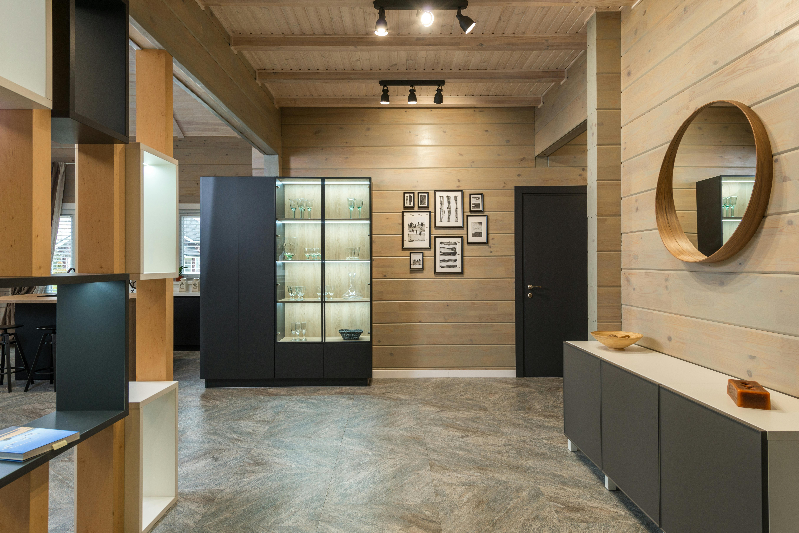

Welcome to Decoracious

Selecting the ideal designs for your home's interior might be difficult. There are a lot of factors to consider, ranging from paint color and accessories to furniture and wallpaper. For many of us, therefore, hiring an interior designer is the wisest course of action. Look no further. We will take your ideas and turn them into reality. We take your dreams and turn them into the perfect designer look.

Creating an ideal working desk setup involves more than just placing a few items together. It is about balancing functionality and aesthetics to foster productivity and inspiration. Whether you're working from home or designing a desk space in a corporate environment, every element plays a crucial role. From the selection of the desk itself to the choice of accessories, lighting, and organizational tools, each factor contributes to a workspace that is both efficient and visually pleasing.
Designing the perfect hallway involves more than just decorating a simple passage. It is about merging elegance and functionality to turn this transitional space into a vital part of your home's overall design. Hallways are often the first impression guests have of your home, making it essential to balance aesthetic appeal with practical use. Whether you're enhancing a narrow corridor or a grand entrance hall, each design choice contributes to a welcoming and efficient space.
